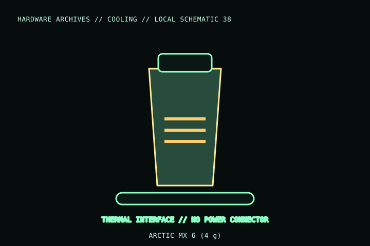

[ INDIVIDUAL COMPONENT // COOLING ]
ARCTIC MX-6 (4 g)
A 4 g package of ARCTIC MX-6 thermal compound. Package sizes are distinct retail quantities; this is not MX-4, MX-5, MX-7, a thermal pad, or electrically conductive liquid metal.

MODEL IDENTIFICATION: Verify full model, suffix, SKU, generation, connector, and host-support documentation against the physical item. The record describes only the identified model and does not guarantee host compatibility.
Specifications
| Exact identity | ARCTIC MX-6; 4 g package, verify package label/article number. |
|---|---|
| Interface type | Thermal compound applied between compatible component contact surface and cooler cold plate. |
| Electrical connection | None; no power connector. Use manufacturer handling and application instructions. |
| Electrical property | ARCTIC product literature describes MX-6 as electrically non-conductive; do not use that statement to justify spills on contacts. |
| Compatibility | Depends on component surface and cooler’s service instructions; it is not a replacement for a specified pad thickness or liquid-metal interface. |
Compatibility and installation
- Clean and dry the mating surfaces and apply only the amount/method directed by ARCTIC and the cooler/host maker.
- Keep paste away from socket contacts, connectors, and exposed circuitry. Confirm that the cooler maker permits paste on the specific die/heat spreader.
- Do not substitute paste for a thermal pad or liquid metal where the device design specifies another interface.
Service notes
Remove old compound from both contact surfaces with suitable lint-free materials before reapplication. Keep the syringe capped and uncontaminated; follow ARCTIC’s product handling and storage guidance.
Manufacturer references
- ARCTIC — MX-6Manufacturer product page; identify the exact available package quantity and properties.
- ARCTIC — SupportManufacturer application and support material.
Model variants and revisions may change specifications or included hardware; the manufacturer’s exact product page/manual and the host manual take precedence.